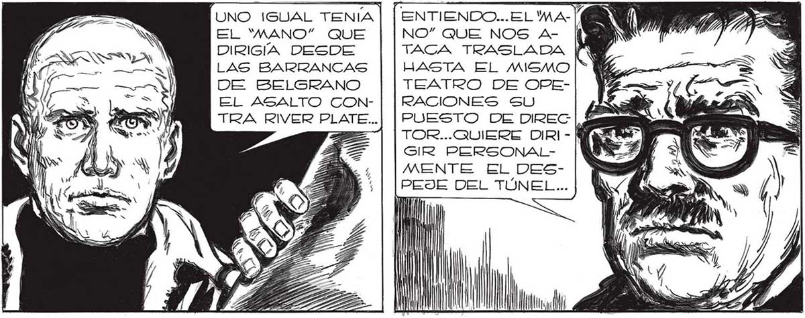

233 Cy J¿QUÉ CLASE DE ARMA GSE- NO CREO QUE GEAN NINGÚN AR A (RÁN ESOS CRISTALES, FAVA 2 ] MA... NINGÚN ARMA OFENSIVA TT LX IFSZ IS ; POR LO MENOS... PARECEN MAS = AS BIEN CORAZAS... TQ Nu ] NN WA! | | 07] [EsO, AMIGO FAVA,ES EL TE-N NN Ms CLADO POR MEDIO DEL GUAL... Y S NW | W Y Sa J 2 Z Z ET RT Ze INN ÓN WN y"? S:, FAVALL!I LE ANDUVO CERCA. LOS HOMBROS- ROBOTS DELANTE NUESTRO, SE ALZO UNA ESPECIE DE VIDRIERA TRANSPARENTE, LIGERAMENTE CONVEXA. UNIERON LAS... | «EL “MANO” QUE DIRIGE EL ATAQUE CONTRA NOSOTROS, MANEJA A LOS "CASCARUDOS”, A LOS H Y /// BRES- ROBOTS " | MI A ' AN lA Ps UNO IGUAL TENIA | | ENTIENDO...EL'MAEL 'MANO” QUE NO” QUE NOS A- Í DIRIGÍA DESDE TACA TRASLADA E LAS BARRANCAS HASTA EL MISMO DE BELGRANO TEATRO DE OPEEL ASALTO CON- | |RACIONES SU TRA RIVER PLATE...| | PUESTO DE DIREC | TOR...QUIERE DIRI - | GIR PERSONALMENTE. EL DES PEJE DEL TÚNEL ... ' J PP
